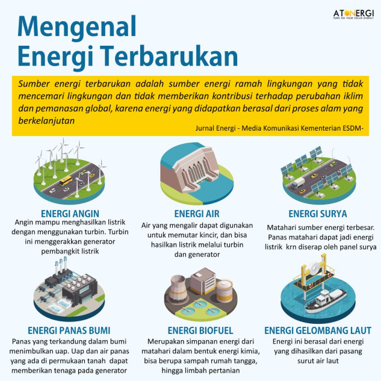
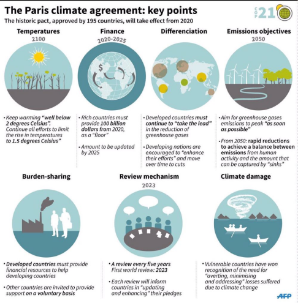
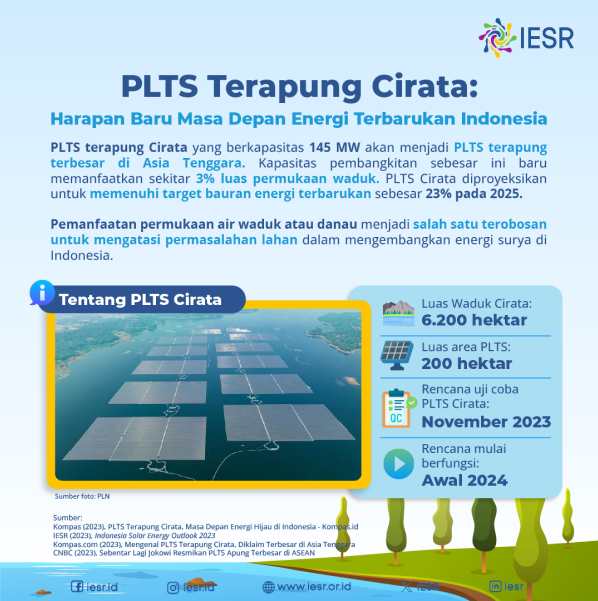
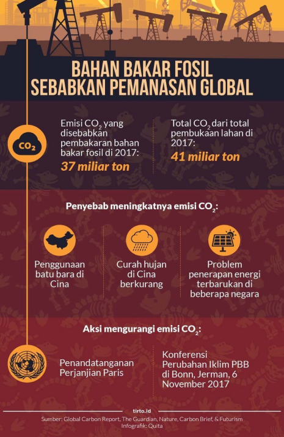

Selamat datang di halaman Informasi SolarSTEM, tempat dimana kita merinci lebih lanjut tentang bagaimana
informasi terkini tentang energi terbarukan , penggunaan energi surya dapat mengubah paradigma energi global
dan memberikan kontribusi nyata terhadap keberlanjutan planet kita.
Apa Itu Energi Terbarukan?
Knowledge
Energi terbarukan, sebagai bentuk energi yang bersumber dari alam, merupakan daya yang dapat diperbaharui
secara terus-menerus. Keunikan dari sumber-sumber energi ini terletak pada kemampuannya untuk diperbarui
dalam skala waktu yang sesuai dengan jangka waktu manusia, sehingga penggunaannya dapat dilakukan secara
berkesinambungan. Sumber-sumber energi terbarukan memberikan kontribusi positif terhadap ketahanan energi
dan lingkungan, serta berperan penting dalam upaya global untuk mengurangi dampak negatif perubahan iklim.
Beberapa contoh utama energi terbarukan mencakup beragam teknologi dan metode pemanfaatan sumber daya alam, di antaranya:
Beberapa contoh utama energi terbarukan mencakup beragam teknologi dan metode pemanfaatan sumber daya alam, di antaranya:
- Energi Matahari (Solar): Memanfaatkan sinar matahari untuk menghasilkan listrik melalui sel surya atau menghasilkan panas untuk aplikasi pemanasan air dan ruangan
- Energi Angin (Wind): Mengubah energi angin menjadi daya listrik melalui turbin angin yang berputar.
- Energi Air (Hydropower): Menggunakan energi air yang bergerak, seperti sungai atau air terjun, untuk menghasilkan listrik.
- Energi Panas Bumi (Geothermal): Eksploitasi panas yang berasal dari dalam bumi untuk menghasilkan listrik atau energi panas.
- Biomassa Pemanfaatan bahan organik seperti kayu, limbah pertanian, dan biomassa lainnya untuk menghasilkan energi termal atau listrik.
- Pasang dan Surut (Wave and Tidal) Mengonversi energi dari gelombang laut atau pasang surut menjadi listrik.

Akhir Masa dari Energi Fosil?
Politics
Konferensi Tingkat Tinggi Perubahan Iklim Perserikatan Bangsa-Bangsa (COP) ke-28 di Dubai, Uni Emirat Arab,
mencatat sejarah dengan kesepakatan global untuk secara bertahap beralih dari bahan bakar fosil. Dalam
pertemuan yang dihadiri oleh 154 kepala negara dan pemerintahan, 198 negara sepakat untuk melakukan transisi
ke dalam sistem energi yang adil, teratur, dan merata.
Komitmen ini, yang merupakan yang pertama kali disepakati dalam sejarah COP, mendorong negara-negara untuk
berkontribusi pada upaya global menekan emisi karbon, termasuk dengan mempercepat aksi dalam dekade yang
kritis ini. Panel Antarpemerintah tentang Perubahan Iklim PBB (IPCC) menyatakan bahwa global perlu mengurangi
emisi gas rumah kaca sebesar 43 persen pada tahun 2030 dibandingkan dengan tingkat pada 2019, untuk mencapai
target pemanasan global maksimal 1,5 derajat Celcius di atas rata-rata pra-industri sesuai Perjanjian Paris.

Selain kesepakatan beralih dari bahan bakar fosil, pertemuan tersebut juga mencapai kesepakatan
operasionalisasi dana kerugian dan pendanaan untuk memperkuat ketahanan terhadap dampak perubahan iklim.
Meskipun langkah-langkah ini dianggap sebagai tonggak sejarah, inventarisasi global mencatat bahwa banyak negara masih berada di luar jalur untuk mencapai tujuan Perjanjian Paris. Oleh karena itu, para pihak mendorong pembuatan target ambisius berskala ekonomi, termasuk peningkatan kapasitas energi terbarukan tiga kali lipat dan efisiensi energi naik dua kali lipat pada tahun 2030. Ini diperlukan untuk mencapai nol emisi pada tahun 2050.
Perjanjian tersebut juga mengakui pentingnya pendanaan global dari negara-negara kaya ke negara-negara miskin dan rentan terdampak krisis iklim. Pendanaan ini diarahkan untuk membantu mereka beradaptasi terhadap perubahan iklim dan transisi energi menuju sumber energi terbarukan yang ramah lingkungan.
Hasil pertemuan ini dianggap sebagai langkah awal dalam mengakhiri era penggunaan bahan bakar fosil dan memberikan sinyal kuat untuk mengatasi masalah utama iklim. Kini, pemerintah dan dunia usaha diharapkan untuk mewujudkan janji aksi iklim mereka, dengan memastikan bahwa aksi iklim berjalan berdampingan dengan pembangunan manusia.
Meskipun langkah-langkah ini dianggap sebagai tonggak sejarah, inventarisasi global mencatat bahwa banyak negara masih berada di luar jalur untuk mencapai tujuan Perjanjian Paris. Oleh karena itu, para pihak mendorong pembuatan target ambisius berskala ekonomi, termasuk peningkatan kapasitas energi terbarukan tiga kali lipat dan efisiensi energi naik dua kali lipat pada tahun 2030. Ini diperlukan untuk mencapai nol emisi pada tahun 2050.
Perjanjian tersebut juga mengakui pentingnya pendanaan global dari negara-negara kaya ke negara-negara miskin dan rentan terdampak krisis iklim. Pendanaan ini diarahkan untuk membantu mereka beradaptasi terhadap perubahan iklim dan transisi energi menuju sumber energi terbarukan yang ramah lingkungan.
Hasil pertemuan ini dianggap sebagai langkah awal dalam mengakhiri era penggunaan bahan bakar fosil dan memberikan sinyal kuat untuk mengatasi masalah utama iklim. Kini, pemerintah dan dunia usaha diharapkan untuk mewujudkan janji aksi iklim mereka, dengan memastikan bahwa aksi iklim berjalan berdampingan dengan pembangunan manusia.
Pembangkit Listrik Tenaga Surya Terbesar di ASEAN ada di Indonesia?
Knowledge
Pada Oktober 2023, PLTS Terapung Cirata, pembangkit listrik tenaga surya terapung pertama di Indonesia,
akan menjalani uji coba. Proyek ini diharapkan mulai beroperasi pada awal tahun 2024, menjadi yang
terbesar di Asia Tenggara. Dibangun di Waduk Cirata di Jawa Barat, proyek ini telah berlangsung selama
tiga tahun.
PLTS Terapung Cirata dikembangkan oleh PT Pembangkitan Jawa Bali Investasi (PJBI), anak perusahaan PT PLN, bekerja sama dengan perusahaan energi Masdar dari Abu Dhabi, Uni Emirat Arab. Kontrak jual-beli listrik ditandatangani pada Januari 2020, dengan PT PJBI memegang mayoritas saham. Proyek ini disaksikan oleh pejabat tinggi, termasuk Menteri BUMN Erick Thohir.
Proyek PLTS Terapung Cirata dibangun di areal seluas 250 hektar di atas Waduk Cirata. Dengan kapasitas listrik 145 Mega Watt ac (MWac), proyek ini terdiri dari 13 blok dengan lebih dari 340.000 panel surya.
PLTS Terapung Cirata diharapkan memberikan kontribusi besar terhadap penurunan emisi karbon di Indonesia, sesuai dengan komitmen pemerintah untuk mencapai 29 persen pada 2030. Dengan tarif listrik yang lebih murah (5,81 cent AS atau sekitar Rp 17,0814 per kWh), proyek ini juga dianggap menjadi langkah menuju energi baru terbarukan (EBT) sebesar 23 persen pada 2025.
PLTS Terapung Cirata diharapkan dapat menekan emisi karbon lebih dari 200rb ton/tahun. Selain itu, proyek ini menjadi bagian dari upaya pemerintah untuk mencapai Net Zero Emission (NZE) pada tahun 2060,
PLTS Terapung Cirata dikembangkan oleh PT Pembangkitan Jawa Bali Investasi (PJBI), anak perusahaan PT PLN, bekerja sama dengan perusahaan energi Masdar dari Abu Dhabi, Uni Emirat Arab. Kontrak jual-beli listrik ditandatangani pada Januari 2020, dengan PT PJBI memegang mayoritas saham. Proyek ini disaksikan oleh pejabat tinggi, termasuk Menteri BUMN Erick Thohir.
Proyek PLTS Terapung Cirata dibangun di areal seluas 250 hektar di atas Waduk Cirata. Dengan kapasitas listrik 145 Mega Watt ac (MWac), proyek ini terdiri dari 13 blok dengan lebih dari 340.000 panel surya.
PLTS Terapung Cirata diharapkan memberikan kontribusi besar terhadap penurunan emisi karbon di Indonesia, sesuai dengan komitmen pemerintah untuk mencapai 29 persen pada 2030. Dengan tarif listrik yang lebih murah (5,81 cent AS atau sekitar Rp 17,0814 per kWh), proyek ini juga dianggap menjadi langkah menuju energi baru terbarukan (EBT) sebesar 23 persen pada 2025.
PLTS Terapung Cirata diharapkan dapat menekan emisi karbon lebih dari 200rb ton/tahun. Selain itu, proyek ini menjadi bagian dari upaya pemerintah untuk mencapai Net Zero Emission (NZE) pada tahun 2060,

sesuai dengan Peraturan Presiden No 112/2022 tentang Percepatan Pengembangan Energi Terbarukan. Pemerintah
juga berencana mengoperasikan proyek serupa, seperti PLTS Terapung Singkarak di Sumatra Barat dan PLTS
Terapung Saguling di Kabupaten Bandung Barat. Meski terbesar saat ini di Asia Tenggara, posisi PLTS Terapung
Cirata mungkin digantikan oleh proyek serupa di Danau Laguna Filipina dengan kapasitas 1 GW yang dijadwalkan
beroperasi pada 2024 atau 2025.
Dampak Buruk Energi Fosil
Knowledge
Energi fosil, yang berasal dari sumber daya alam seperti batu bara, minyak bumi, dan gas alam, telah
menjadi sumber utama energi global selama beberapa dekade. Meskipun memberikan kontribusi besar terhadap
kemajuan teknologi dan pertumbuhan ekonomi, penggunaan energi fosil juga memiliki dampak serius terhadap
lingkungan dan kesehatan manusia.
- Pemanasan Global dan Perubahan Iklim: Energi fosil merupakan penyumbang utama emisi gas rumah kaca, seperti karbon dioksida (CO2) dan metana (CH4), yang bertanggung jawab atas pemanasan global dan perubahan iklim. Dampaknya termasuk peningkatan suhu global, cuaca ekstrem, dan naiknya permukaan air laut yang dapat menyebabkan banjir dan perubahan ekosistem.
- Pencemaran Udara: Pembakaran bahan bakar fosil menghasilkan polutan udara seperti sulfur dioksida, nitrogen oksida, dan partikulat halus. Pencemaran udara ini dapat menyebabkan masalah kesehatan serius, termasuk gangguan pernapasan, penyakit kardiovaskular, dan peningkatan risiko kanker.
- Kerusakan Lingkungan: Pengambilan dan ekstraksi energi fosil sering kali melibatkan penebangan hutan, penggalian tambang, dan merusak ekosistem alami. Ini dapat menyebabkan kehilangan keanekaragaman hayati, rusaknya habitat satwa liar, dan kerusakan tanah.
- Krisis Energi dan Ketergantungan: Ketergantungan berlebihan pada energi fosil membuat banyak negara rentan terhadap fluktuasi harga minyak dan gas. Selain itu, persaingan untuk sumber daya ini dapat menjadi pemicu konflik antarnegara.
